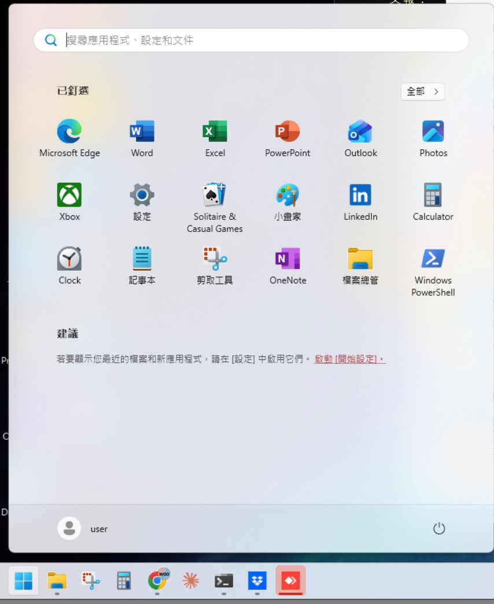
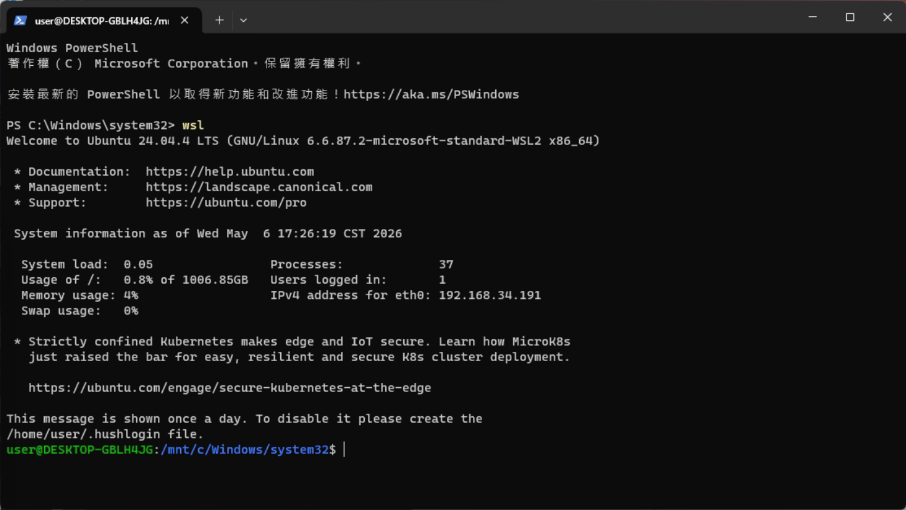
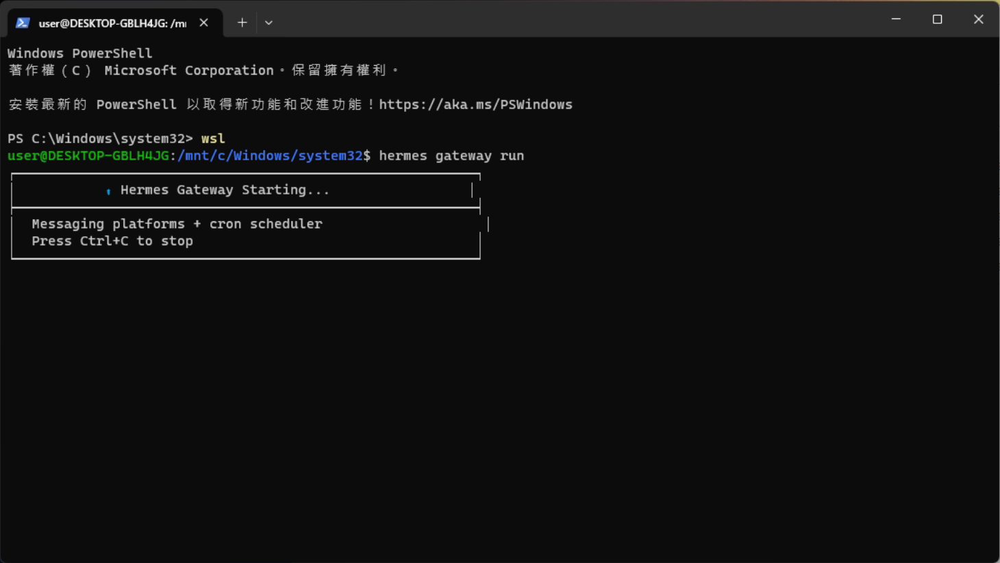
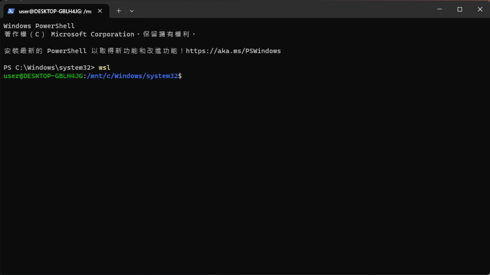
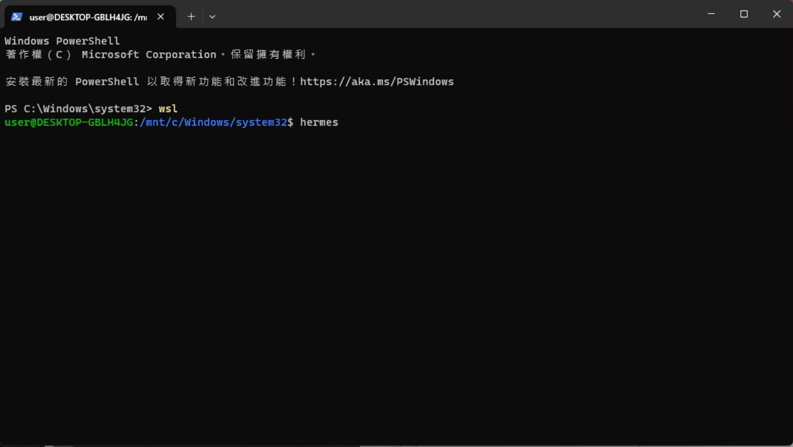
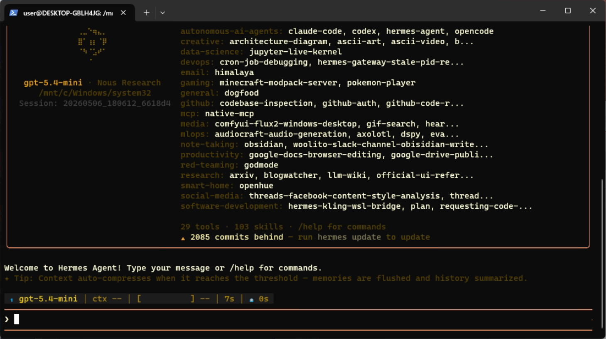
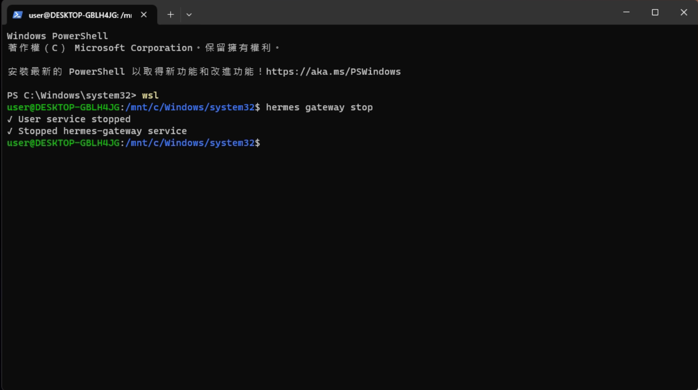
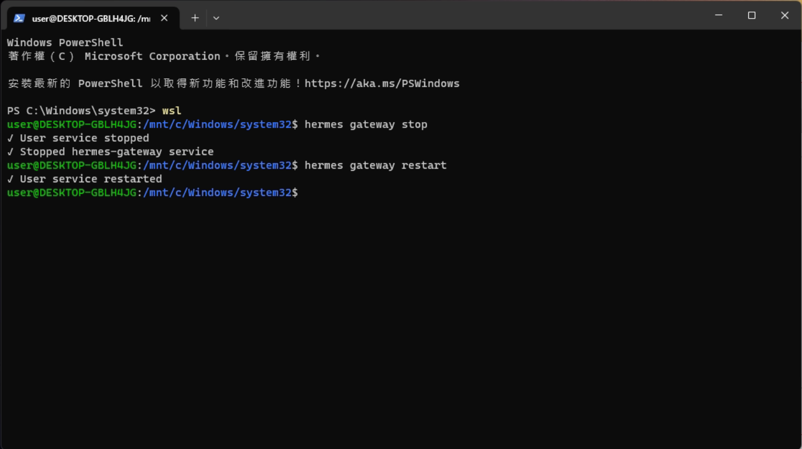

錯誤排除（啟動 Rocky）
理論上 Rocky 在電腦重開機後會自動啟動即可正常使用，若遇到什麼錯誤可以直接叫他自己修好自己
啟動 Rocky 的方式：
- 在 Rocky 主機點「開始」選擇「Windows PowerShell」

- 輸入
wsl後按 Enter，會看到這個畫面，一定要出現下面這行user@DESKTOP-GBLH4JG:/mnt/c/Windows/system32$

- 輸入
hermes gateway run等他跑出這個畫面即可

在本機使用 Rocky：
有時候 Rocky 無法在 Slack 上連接上，可以直接在 Rocky 本體上使用它並叫他修復
- 在 Rocky 主機點「開始」選擇「Windows PowerShell」
- 輸入
wsl後按 Enter，會看到這個畫面，一定要出現下面這行user@DESKTOP-GBLH4JG:/mnt/c/Windows/system32$

- 輸入
hermes

- 出現這個畫面時即可直接跟他對話請他修復 slack 通道

強制關閉並重啟 Rocky：
非必要不要強制關閉他，需要的話可以先重開機就好
但有時候因為某些原因（例如通道被塞住）必須強制關閉，請依照以下方法
- 在 Rocky 主機點「開始」選擇「Windows PowerShell」
- 輸入
wsl後按 Enter，會看到這個畫面，一定要出現下面這行user@DESKTOP-GBLH4JG:/mnt/c/Windows/system32$
- 輸入
hermes gateway stop

- 再輸入
hermes gateway restart即可
